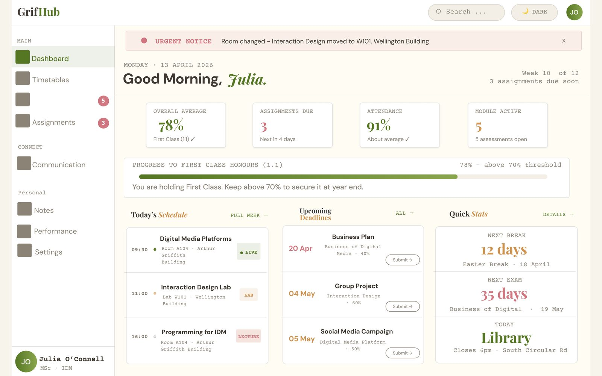
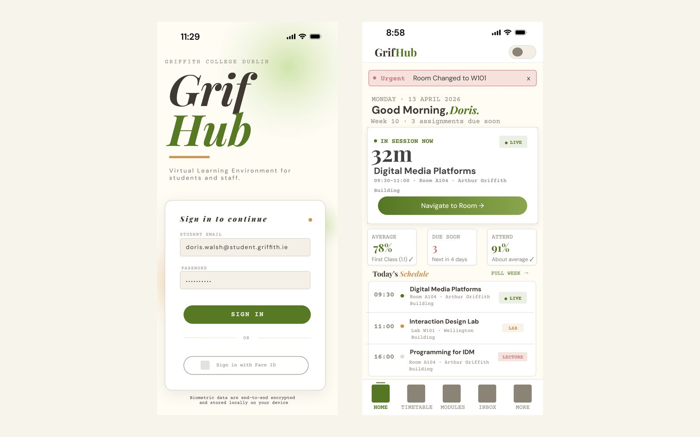
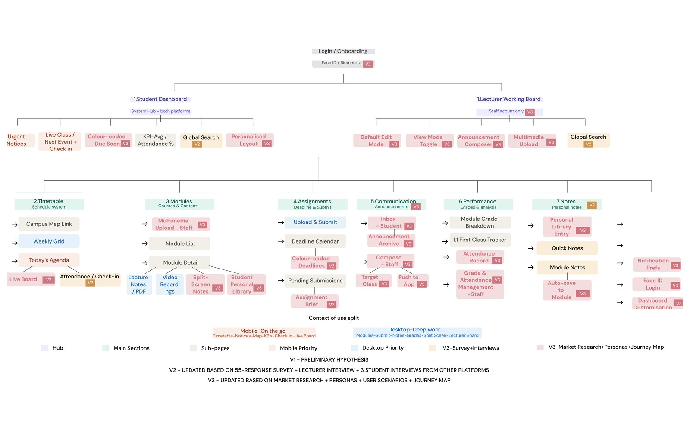
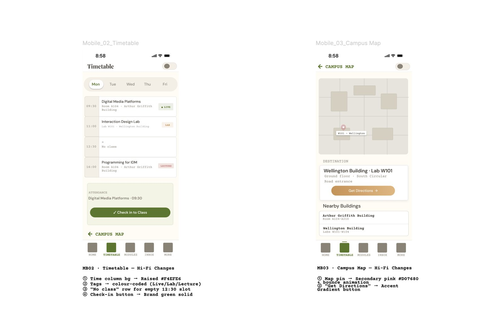
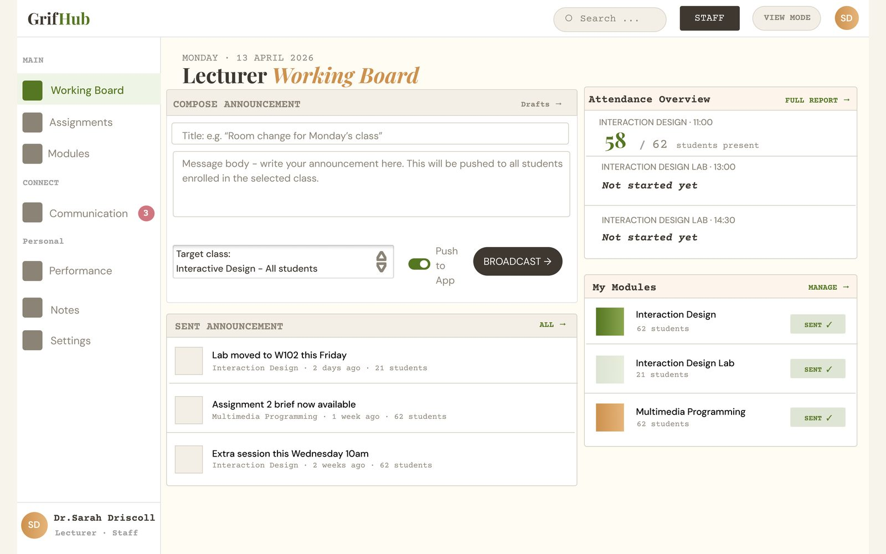
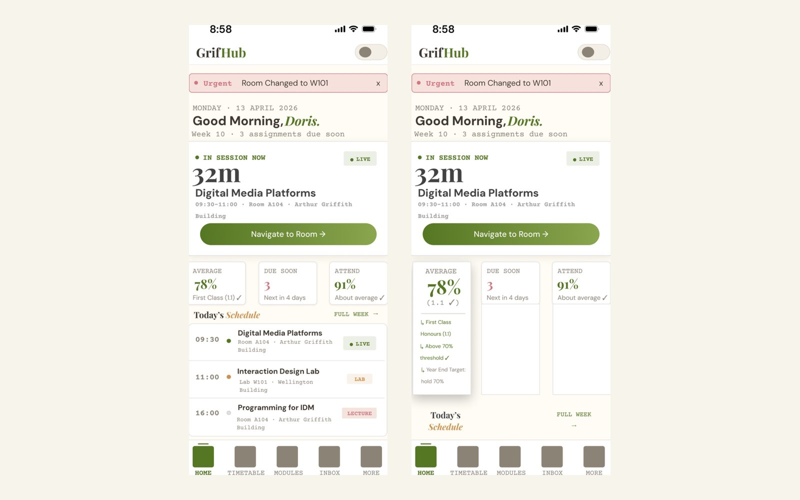
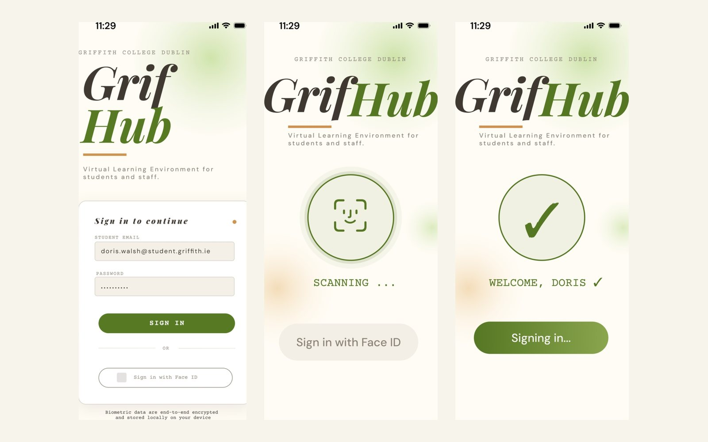

Case File #005
GrifHub
A learning platform designed to replace Moodle at Griffith College, prototyped in Figma across mobile and desktop. Three-person team working in Goal-Directed Design. I was group lead and lead UX/UI designer: the information architecture, all sixteen wireframes and every high-fidelity screen are mine.
Concept
A platform that works for the institution
Moodle scored 3.58 out of 5 in our survey, which sounds like a system nobody has a problem with. The interesting number was what students actually opened it for: assignment briefs 94.5 per cent, course material 87.3 per cent, deadlines 78.2 per cent. Communication, timetable and grades were barely used.
That gap is not students deciding they do not need those things. It is students deciding the platform is not where they go for them. 81.8 per cent were using outside tools to communicate. 30.9 per cent kept their notes in a separate app. The platform was not failing loudly, it was quietly losing the parts of the day that matter most.
From the lecturer side the same pattern showed up. Edit Mode has to be switched on every single time. Anything that is not a PDF, a link for instance, takes manual work. Grades and attendance live in a different system entirely. And the messaging tool is treated as unusable, so announcements go out by email, which is exactly where students said they stop reading.
Decisions
Five that shaped it
The sitemap was written before the research, on purpose
Why a structure came first and was then allowed to be wrongVersion 1.0 was drawn on 25 March, before a single survey went out, and marked provisional in the file. We needed a structure to ask questions about; you cannot ask someone whether deadlines are easy to find without a guess at where deadlines live.
It was then rewritten twice. Version 2.0 after the survey and the lecturer interview, which added colour-coded deadlines, multimedia upload for staff and a student personal library. Version 3.0 after the personas and the competitor research, which promoted communication into primary navigation and split notes into three areas. Each version changed the shape of the thing rather than bolting sections onto the side of it. The badges in Fig. 03 mark which round of research put each node there.
Two platforms with different jobs, not one design resized
Why mobile and desktop were designed separatelyOver 80 per cent of students said they reach for a phone for quick checks. 94.5 per cent said they use a laptop when they actually sit down to work. Those are two different products wearing the same name.
Mobile got biometric check-in, deadline tracking and urgent notices: things you do standing up, between classes. Desktop got split-screen notes beside lecture material, assignment submission and the lecturer broadcast board: things you do sitting down for an hour. Same design language, same logic, different purpose. Designing one and shrinking it would have thrown away half of what the research told us.
Two cards removed for being correct and useless
Why analysis does not belong on a home screenThe desktop dashboard started with a Performance card showing detailed grade breakdowns. It was accurate and it was in the wrong place. Detailed grade analysis is something you go looking for, on the Performance page, not something that greets you.
The lecturer dashboard had the same problem in reverse. Attendance was a per-module percentage chart across the semester. Dr Sarah, our lecturer persona, checks attendance in the morning before a class. A semester percentage cannot tell her who is missing right now, so it became today's per-class present and absent counts.
A tool limitation turned into the interaction
Why dashboard personalisation is tapped and not draggedFlow 4 lets a student hide, pin and reorder the widgets on their dashboard. The obvious interaction is drag and drop, and Figma prototype mode does not support freeform dragging.
Faking it with a video or a single canned animation would have made the prototype lie about how it behaves. So personalisation became tap-based, which meant every control had to communicate intent without the physical affordance that dragging gives you for free. It took more thinking than anything else in the project.
Five people took ten minutes to kill my own card
Why the last change was the most useful oneNear the end we ran an informal test with five Griffith students: two from the wider team who had not touched the design work, three who had never seen the project. Ten to twenty minutes each, no script, just what do you find useful here.
Every single one of them said the Quick Stats card felt repetitive. They were right and it was obvious once said out loud. Two of its three metrics were already in the KPI row directly above it, and the third had been a placeholder since the wireframe stage and nobody had gone back for it. We had been looking at those screens for so long we had stopped seeing them. It was replaced with a holiday countdown, an exam countdown and library closing time: three things that are actually different from each other. Fig. 01 shows the card as it ended up.
Specification
What went into it
Research base
Run by Elin Kok Jia Yi, lead UX researcher on the team. Survey responses came from current and former Griffith College students between 27 March and 6 April 2026.
My deliverables
Nine mobile screens and ten desktop screens, with prototype connections built for all five flows across both platforms.
Design system
Built by Yu Qiao Zhang, design ops lead. The group reviewed three moodboard directions and chose Olive and Amber. Because the tokens were set up as Variables with both modes, theme switching worked across the whole high-fidelity build without rework.
Personas
Built from the survey and interview findings rather than assumptions. Doris drove the mobile screens, Julia and Dr Sarah the desktop ones.
Method
Research, personas, journey mapping, requirements, information architecture and wireframes all completed before any high-fidelity work began. Keeping that order was the part of being group lead that took the most discipline.
Accessibility
Checked across both platforms and recorded in the design document rather than assumed from the palette.
Screens
The prototype







Reflection
What it taught me
This was my first Figma project built from nothing. I came in assuming that building websites would make the design side feel familiar and it did not. There is a real distance between knowing what you want something to look like and knowing how to construct it in a tool you have never opened.
Sitting still was the hard part
Being group lead meant keeping us in the Goal-Directed Design sequence instead of jumping ahead. There were weeks where the colours and components were already forming in my head while I was still working on wireframes. The interactions I am proudest of, the KPI tap-to-expand, the toast system, the personalisation flow, were none of them in the original plan. They came out of going back to the research and asking what would make this feel real for Doris or Julia. I would not have found them if I had started with the visuals.
The staff side is visibly thinner
Dr Sarah's journey through multimedia upload and view mode preview was added late and it shows next to the student flow. It stayed on the list and kept getting pushed behind the student side, and by the time we got to it properly there was not enough runway to give it the same care. If I ran this again the staff flow would come first, not last.
A layout I never built
I had a desktop dashboard in mind with a full brand gradient editorial column down the left side that would have given the hierarchy much more force. We did not get to it before the deadline. That one still bothers me.
Credits
Who did what
- Chen See Ng, group lead and lead UX/UI designer. Information architecture and all three sitemap versions, sixteen annotated wireframes, five user flows, all nineteen high-fidelity screens and every prototype connection across mobile and desktop.
- Elin Kok Jia Yi, lead UX researcher. Survey design and distribution, the lecturer interview, three written competitor interviews, the three personas, scenarios and journey maps.
- Yu Qiao Zhang, design ops lead. The full design system: colour and gradient tokens as Figma Variables for light and dark, the 8pt grid, the component library, usage guidelines and behaviour specifications.